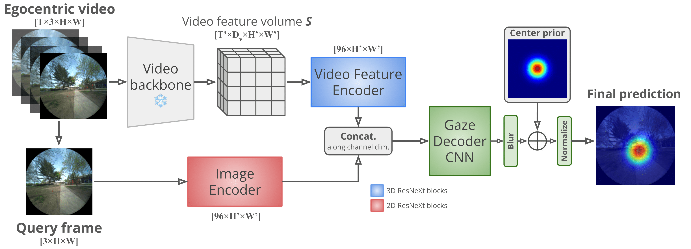

EgoCampus: Egocentric Pedestrian Eye Gaze Model and Dataset
Abstract
We address the challenge of predicting human visual attention during real-world navigation by measuring and modeling egocentric pedestrian eye gaze in an outdoor campus setting. We introduce the EgoCampus dataset, which spans 25 unique outdoor paths over 6 km across a university campus with recordings from more than 80 distinct human pedestrians, resulting in a diverse set of gaze-annotated videos. The system used for collection, Meta's Project Aria glasses, integrates eye tracking, front-facing RGB cameras, inertial sensors, and GPS to provide rich data from the human perspective. Unlike many prior egocentric datasets that focus on indoor tasks or exclude eye gaze information, our work emphasizes visual attention while subjects walk in outdoor campus paths. Using this data, we develop EgoCampusNet, a novel method to predict eye gaze of navigating pedestrians as they move through outdoor environments. Our contributions provide both a new resource for studying real-world attention and a resource for future work in gaze prediction models for navigation. Dataset and code are available upon request, and will be made publicly available at a later date.
EgoCampus Dataset
The EgoCampus dataset is a large-scale, multimodal resource designed specifically for studying egocentric pedestrian visual attention during real-world navigation. Using Meta's Project Aria glasses, we collected approximately 32 hours of synchronized video and sensor data from 82 unique human participants walking on 25 distinct outdoor paths at Rutgers University. The data stream is exceptionally rich, combining high-resolution (1408x1408) front-facing RGB video with precise eye-tracking coordinates, inertial motion units (IMUs), and GPS localization. This unique integration of features a large participant pool, extensive gaze data, and full outdoor sensor synchronization distinguishes EgoCampus from prior work, which often focuses on indoor activities or lacks complete motion and gaze data (as detailed in the comparison table ). All data adheres to strict privacy and ethics protocols, including de-identification and blurring of non-consenting pedestrians using the EgoBlur algorithm.
The comprehensive collection protocol ensures the dataset captures the complexity of real-world outdoor navigation. Paths were deliberately chosen to include a rich variety of environmental contexts, lighting conditions, and interactions with static and dynamic obstacles, with recordings spanning different times of day, seasons, and weather conditions. The data processing pipeline extracts, downscales, and temporally aligns the high-frequency sensor streams (IMU at 1000Hz) with the 30Hz RGB frames, creating a highly efficient, synchronized ground-truth format suitable for modern deep learning models like our proposed EgoCampusNet. By focusing specifically on outdoor pedestrian egomotion and visual attention, EgoCampus provides a critical new benchmark for research in gaze prediction, navigation modeling, and general egocentric computer vision.

Dataset Paths. A map showing a subset of the campus region, with colored paths indicating the participants’ walking trajectories. During data collection, each participant follows a set of paths forwards and backwards. A sample of the captured egocentric video is shown.
EgoCampusNet Model
The core goal of EgoCampusNet (ECN) is to predict the most likely gaze points (as a heatmap) for a given frame in an egocentric video. The methodology is built upon the principle that past visual context influences future gaze behavior. To achieve this efficiently, ECN utilizes a pre-trained video encoder backbone (primarily X3D, but also evaluated with 3D ResNet) to process the high-dimensional video input of length T and extract a set of compact spatio-temporal features. This video backbone dramatically reduces redundancy while retaining essential information about the surrounding environment and motion. This feature extraction step yields spatio-temporal features (S) that encode context from the entire video clip.
The novel component of ECN is the spatio-temporal fusion mechanism. First, the features derived from the entire video clip (S) are processed by a lightweight ResNeXt block to create a contextual feature map (S'). In parallel, the specific query frame ft, whose gaze is being predicted is also encoded through a separate ResNeXt block to generate an image-specific feature map (I). These two maps, S' and I, are then concatenated along the channel dimension to form a combined encoded gaze map. A learned CNN decoder network then takes this combined feature map, upscales it to the original spatial dimensions of the input, and applies final post-processing steps (blurring, adding a center prior, and normalization) to produce the final predicted gaze heatmap. The model is efficiently trained using the ADAM optimizer and an MSE loss function, requiring approximately 8 hours on a single NVIDIA RTX 3090 GPU.

Spatio-temporal Fusion method. A pre-trained video backbone extracts contextual spatio-temporal features, which are fused with image features from the query frame via separate ResNet blocks. The combined features are then decoded into the final gaze heatmap output.
BibTeX
@article{YourPaperKey2024,
title={EgoCampus: Egocentric Pedestrian Eye Gaze Model and Dataset},
author={John, Ronan and Kesari, Aditya and DiMatteo, Vincenzo and Dana, Kristin},
journal={ArXiv},
year={2026}
}Acknowledgements
This work was supported by the NSF-NRT grant: Socially Cognizant Robotics for a Technology Enhanced Society (SOCRATES), No. 2021628 and NSF CNS Reality-Aware Networks No. 1901355. Thank you to Meta for allowing us to use the Project Aria glasses.